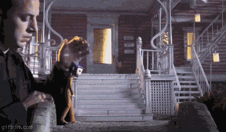
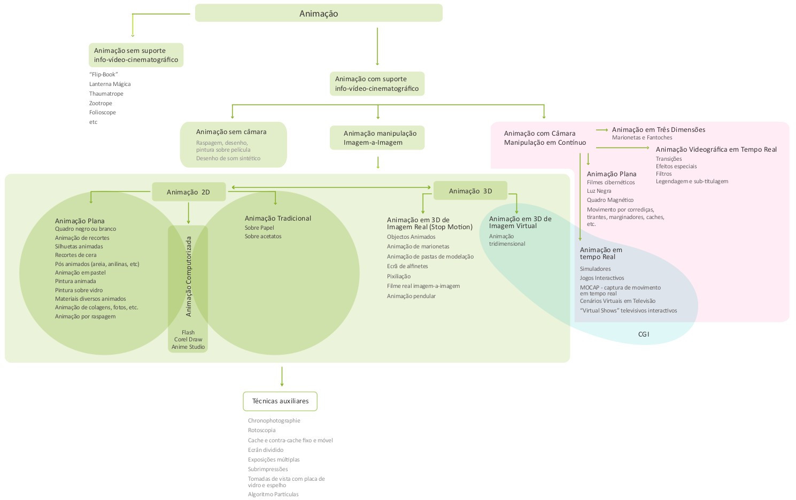
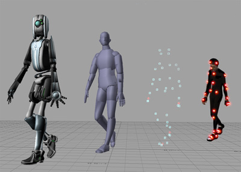
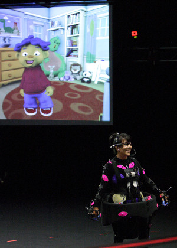
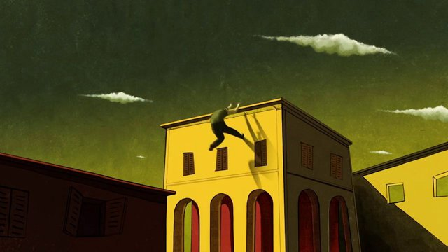

Introdução à animação 3D
Animação
“The basic principle of animation can be defined as a process that creates the illusion of movement to an audience by the presentation of sequential images in rapid sucession.” (Chong, A. & McNamara, 2008, p.8)
“To animate, and the related words, animation, animated and animator all derive from the latin verb, animare, which means ‘to give life to’, and whithin the context of the animated film, this largely means the artificial creation of the illusion of movement in inanimate lines and forms.” (Wells, 1998, p.10)
Animation basics: The optical illusion of motion TED-Ed Lesson
Animation basics: The art of timing and spacing TED-Ed Lesson
A animação é uma área de produção artística e criativa com fronteiras não estáticas. Atualmente, a designação é muitas vezes utilizada para designar uma área que inclui filmes de natureza diversa (curtas e longas metragens, da ficção aos documentários, para fins de entretenimento, publicidade, educacionais, etc.) realizados com diferentes técnicas (stopmotion com plasticina, recortes/cut-out, 3D, etc.), efeitos especiais visuais (VFX), jogos de computador, simulações, visualização científica, motion graphics, etc.
Historicamente, a animação surge no contexto do cinema. Primeiramente, surge como técnica para produção de "truques" inseridos em filmes live-action, é o início dos VFX. Posteriormente, a animação foi ganhando uma vida e cultura próprias e nasce o cinema de animação.
Animação é o produto que resulta da utilização de um conjunto de técnicas que permitem criar a ilusão de movimento através da apresentação sequencial numa sucessão rápida de imagens inanimadas (frames) ligeiramente diferentes. Pode ser utilizada na produção de diferentes tipos de obras, produtos com natureza muito diversa, e em várias áreas. Na área da produção cinematográfica, as técnicas da animação são sobretudo utilizadas para sustentar um tipo de cinema (o cinema de animação) e para criar efeitos especiais visuais (incluídos no cinema live-action).
 Gif animado que apresenta uma sequência rápida de imagens inanimadas. O efeito de animação é obtido na personagem Coraline porque em cada imagem ela apresenta uma pose ligeiramente diferente.
Atualmente, a importância cultural e económica da animação continua a crescer rapidamente e a disseminação das suas técnicas fez com que haja cada vez mais produção de animação fora do contexto do cinema. Por outras palavras, tem crescido a utilização da animação fora do contexto do cinema de animação.
Cinema de animação
É importante entender que o cinema de animação não constitui propriamente um género de cinema. É antes um tipo de cinema, alternativo e diferente do cinema live-action (embora possam ser misturados ou combinados), que pode ser utilizado para criar obras de qualquer género (documentário, terror, ficção científica, etc.).
No cinema Live-action, o movimento existe antes e é capturado ou registado. No cinema de animação, o movimento não existe antes, é criado pelo animador.
As regras da categoria curtas-metragens dos Óscares da Academy of Motion Picture Arts and Sciences definem a curta-metragem de animação do seguinte modo: "An animated film is created by using a frame-by-frame technique, and usually falls into one of the two general fields of animation: character or abstract. Some of the techniques of animating films include cel animation, computer animation, stop-motion, clay animation, pixilation, cutouts, pins, camera multiple pass imagery, kaleidoscopic effects, and drawing on the film frame itself."
Adicionalmente, as regras para as longas-metragens de animação dos Óscares da Academy of Motion Picture Arts and Sciences especificam que "An animated feature film is defined as a motion picture with a running time of more than 40 minutes, in which movement and characters' performances are created using a frame-by-frame technique. Motion capture by itself is not an animation technique."
Geralmente, o cinema de animação divide-se em 2 categorias: abstrato ou de personagem.
Segundo Denis (2011), o cinema de animação divide-se em:
- Animação útil: Serve uma mensagem ou produto
- Animação comercial: É um produto em si mesmo
- Animação de autor: É expressão do autor
- Efeitos especiais & visuais
Ainda segundo o mesmo autor (Denis, 2011), o cinema de animação é produzido através das seguintes modalidades:
- criadores isolados,
- estruturas-mecenas,
- produtoras tradicionais (com ou sem distribuição própria).
Animação Digital e 3D
A designação animação digital engloba diversas técnicas e é utilizada quando a produção da animação é diretamente sustentada por meios informáticos, quando o computador é a ferramenta central da produção sintetizando a imagem e calculando a animação. Apesar de ainda existir produção de animação sem intervenção do computador, a maioria da animação não-digital já não prescinde do apoio dos meios informáticos. No entanto, estes desempenham apenas um papel de suporte na produção. Distingue-se, assim, produção de animação com apoio do computador e produção de animação pelo computador. É animação digital quando o computador também cria animação (por exemplo, quando gera automaticamente as frames intermédias - o tweening). Contudo, as fronteiras delimitadas por esta definição nem sempre são claras dado que existem várias possibilidades de mistura de métodos.
Geralmente, a designação "animação digital 3D", ou simplesmente "animação 3D", é utilizada para identificar um subgrupo da animação digital. Utiliza-se o termo 3D para distinguir a animação criada com imagens 3D, imagens que utilizam uma representação tridimensional de dados geométricos armazenados no computador para efeitos de realização de cálculos e renderização (síntese de imagem) através de um software de tipo específico. Contudo, como o software 3D pode ser utilizado para criar animação sem aparente representação tridimensional (por exemplo, a série de animação South Park é animada num software 3D) e emular outras técnicas, os limites da animação 3D não são sempre claros.
Do ponto de vista da evolução histórica das técnicas da animação, a animação 3D pode ser interpretada como descendendo diretamente da animação stopmotion com bonecos/puppets ou volumes. Tal como a animação 2D pode ser vista como o descendente na era digital do desenho animado da animação tradicional. O conceito de "armadura" é um bom exemplo da herança dessa filiação.
Nos últimos anos, a animação tem visto crescer a sua importância cultural e relevância económica. Este crescimento está diretamente relacionado com a disseminação e evolução dos meios de produção digitais. Por outras palavras, este crescimento da animação está diretamente relacionado com o crescimento da animação digital. No entanto, mesmo dentro da animação digital, a animação 3D é uma área que se destaca pelo seu crescente impacto económico e cultural e pelo seu rápido desenvolvimento tecnológico.
Técnicas
Animando de Marcos Magalhães
Embora seja possível utilizar um sistema de classificação mais rigoroso (e esses sistemas existem!), de um modo geral, as técnicas de animação dividem-se nos seguintes grandes grupos:
-
Mecanismos e dispositivos
- Thaumatrópio
- Zootrópio
- Flipbook
- Praxinoscópio
- etc.
-
Animação tradicional
- Animação completa
- Animação limitada
- Rotoscopia
Trailer de "A Scanner Darkly" (2006)
-
Stopmotion
- Bonecos/puppets
- Claymation
- Recortes (cutout)
- Objetos
- Pixilação
Trailer de "Coraline" (2009)
Trailer de "The Wrong trousers" (1993)
Excerto de "The Adventures of Prince Achmed" (1926) técnica de silhueta é um subgrupo da técnica de cutout
How to Make a Lego Animation brickfilms (filmes com LEGO) são um subgrupo de animação com objetos
"Neighbours" (1952)
-
Outras técnicas
- Areia
- Animação directa
- Pintura-em-vidro
- Pinscreen
Aleksandr Petrov excertos de "The Old Man and the Sea" (1999) e "My Love" (2006)
Making of de "Here and the Great Elsewhere" (2012)
-
Animação digital
- 2D
- 3D
Importa referir que existem outras formas de classificar, não existe um sistema de classificação único e aceite universalmente. Ainda assim, no essencial, os diferentes sistemas de classificação tendem a concordar nos grandes grupos e na existência de uma animação sem computador (apesar de poder ser produzida atualmente com auxílio de um computador) e de uma animação com computador (a animação é parcialmente ou totalmente gerada pelo próprio computador).
 Loureiro, M. I. F. (2010). O cinema de animação português e a interdependência entre a animação comercial e a animação de autor nos anos 90. Dissertação de Mestrado. Lisboa: Faculdade de Arquitectura / Universidade Técnica de Lisboa.
No entanto, muitas vezes, as fronteiras são mais nebulosas do que as classificações acima deixam transparecer: existe animação com e sem computador, animação que combina múltiplas técnicas, emulação de técnicas (por exemplo, utilização de um programa de animação 3D para criar uma animação digital de cut-out ou criação em 3D de animações com aspeto claymation), etc.
Animação produzida pelo computador
Dentro da animação produzida com computador, é relativamente comum encontrar referências (com alguma polémica!) à utilização das técnicas de Digital puppetry e Mocap (Motion Capture). No entanto, nenhuma destas técnicas constitui animação no sentido da sua definição clássica. Em nenhum destes casos existe a criação de animação a partir de frames, o resultado é produzido com recurso a captura de movimentos.
Ainda assim, importa conhecer um pouco melhor as 4 técnicas:
- Keyframing: animação é criada pelo animador.
- Procedural: animação é calculada pelo computador e configurada/manipulada pelo artista.
- Motion capture: resultado é criado pela performance registada anteriormente.
- Digital puppetry: resultado é criado pela performance ao vivo.
Keyframing
O animador marca posições-chave (keys) e o computador procura preencher as posições intermédias através de interpolação. As "keyframes" são da responsabilidade do animador (na animação tradicional eram da responsabilidade do animador principal ou veterano) e as "inbetweens", as frames intermédias, são criadas pelo computador (na animação tradicional eram desenhadas pelos animadores mais jovens ou secundários).
Enquanto técnica, constitui o fundamento básico da animação e está presente desde os primórdios. No contexto digital, a técnica sofreu uma evolução, sendo hoje utilizados outros meios e ferramentas, mas permanece fundamentalmente inalterada. Esta técnica é utilizada nas animações em 3D e 2D.
 Selo de "qualidade" que surge nos final dos créditos do filme Ratatouille (Pixar, 2007).
Selo de "qualidade" que surge nos final dos créditos do filme Ratatouille (Pixar, 2007).
Procedural
Animação criada através da utilização de algoritmos. A animação baseada em física é o exemplo mais comum deste tipo.
Na utilização (simulação) das leis da física para criar movimento, o cálculo da animação é da responsabilidade do computador, o animador configura parâmetros e o computador gera o movimento. A animação procedural também é utilizada nos sistemas de partículas (i.e. fogo, água, fumo), simulação de roupa/tecidos, cabelos/pelos, dinâmicas de corpos moles (soft bodies) ou corpos rígidos (rigid bodies). Estas podem, ou não, também respeitar as leis da física.
Esta técnica pode ser utilizada nas animações em 3D e 2D e tem uma origem digital. Só é possível de realizar com a introdução dos meios informáticos.
Motion Capture
Mocap (“Motion capture”) é o processo de captura/registo dos movimentos "ao vivo" e sua tradução para um modelo digital. Os "performers" (i.e. actores, desportistas, etc.) desempenham os movimentos ou comportamentos em ambiente real, estes são capturados através de sensores, registados digitalmente e depois utilizados para animar um modelo 3D.
É uma técnica que tem vindo a ser cada vez mais utilizada no cinema de animação, com particular relevância nos VFX e jogos de computador. Em diversos casos, é utilizada em conjugação com keyframing (esta última é sobretudo utilizada para detalhes ou correções). Permite um enorme realismo dos movimentos e rapidez de processos.
 Imagem de Hipocrite publicada na Wikipedia.
Digital Puppetry
Também designada por Virtual Puppetry ou Performance Animation, é o processo de manipulação de personagens ou objectos 2D ou 3D em tempo real.
A sua utilização é mais comum em espetáculos "ao vivo" mas também tem vindo a ser utilizada em programas para televisão e jogos de computador.
 Imagem publicada em Seymour, M. (dezembro 3, 2008). Sid the Science Kid. fxguide.
Os "performers" desempenham os movimentos ou comportamentos em ambiente real, estes são capturados através de sensores e utilizados em tempo real para animar uma personagem em 3D ou 2D.
Geralmente, é considerada a distinção entre “Performance Animation” (marioneta digital é controlada com o corpo do actor) e “Waldo puppetry” (marioneta digital é controlada com dispositivos de input).
Para além do cinema de animação (nas suas vertentes de Animação útil, Animação comercial, Animação de autor e Efeitos especiais & visuais), é hoje comum a utilização de animação 3D para diversos fins e áreas.
Embora nem sempre seja fácil distinguir os limites entre a animação que não constitui cinema de animação (sobretudo na sua vertente de animação útil), abaixo identificamos áreas onde é comum a utilização de animação sem storytelling, animação para visualização, animação que não partilha histórias ou personagens. Isto não significa, claro está, que não possa ser utilizado cinema de animação (sobretudo na sua vertente de animação útil) nas mesmas áreas. É hoje comum o reconhecimento que histórias e personagens interessantes e emocionalmente envolventes são um poderoso meio para expressão de ideias e fomentar relações (incluindo para fins educacionais, científicos, sociais, negócios e promoção).
Algumas áreas de aplicação da animação 3D para além do cinema
- Visualização de Arquitetura e Arqueologia
- Imagens geradas por computador de objetos, edifícios e paisagens para apresentações, design e fins científicos. Imagens 3D estáticas e animadas (walk-through, fly-by/through) para visualização arquitetónica e arqueológica. Inclui simulação de projetos de arquitetura e reconstrução de património cultural e arquitetura antiga.
- Publicidade & Negócios
- Design e comunicação visual para fins promocionais e outros de âmbito comercial. Engloba uma grande variedade de dispositivos e formatos, incluindo anúncios publicitários, visualização de produto, identidade corporativa, intros e logótipos animados, apresentações, etc.
- Infografia & visualização de informação
- Dispositivos visuais animados para descrever e comunicar informações e dados. Representações gráficas de informações, dados e conhecimentos são sobretudo utilizadas para fins científicos, educacionais, jornalísticos e marketing.
- Educação
- Animações para facilitar a aprendizagem e apoiar o ensino em todos os seus níveis, formas e modalidades. Uma estratégia pedagógica para aumentar o interesse e motivação para a aprendizagem e uma forma eficaz de representar o conhecimento e informação, demonstrar processos ou relações.
- Ciência
- Imagem 3D animada para fins científicos. Visualização de dados (meteorologia, física, medicina, biologia, química, ecologia, geografia, etc) para proporcionar uma visão diferente e outra compreensão do fenómeno ou dados em estudo.
O uso do computador é cada vez mais preponderante. A permanente inovação das tecnologias, a invenção de novas ferramentas e a crescente democratização dos meios de produção potenciam uma cada vez maior diversidade de formatos, meios, técnicas, públicos, etc.
A mistura de estilos e técnicas é hoje uma realidade: animação em estilo Anime mas feita em França ou Rússia, filmes totalmente produzidos em 3D mas que simulam claymation ou stop-motion, etc. Esta mistura de influências e técnicas assenta sobretudo em dois fenómenos: natureza global da animação (animação é produzida em qualquer região do globo e é vista em todo o mundo) e crescente sofisticação dos meios de produção.
Se as tecnologias 3D têm vindo a melhorar o seu desempenho na criação de maior fotorealismo, também é verdade que tem crescido o interesse pelas técnicas de NPR (Non-Photorealistic Rendering). A sua utilização permite fugir ao fotorealismo e criar animações visualmente mais próximas das produzidas com técnicas mais tradicionais.
 Imagem do filme Lost Senses, inspirado pelas pinturas de Giorgio de Chirico.
A utilização combinada de 3D com stop-motion é outra das tendências atuais. Longas-metragens de animação stop-motion como "Coraline" ou "Box Trolls" mostram a utilidade do 3D e dos VFX desde os primeiros passos da produção (as personagens são modeladas em 3D antes de impressas) até à inclusão de efeitos (fumo, fogo, etc), criação de animações mais complexas ou expansão/enriquecimento dos cenários e adereços existentes. É previsível que nos próximos anos aumente o recurso à utilização de técnicas 3D na produção de filmes de animação stop-motion.
A produção de animação para adultos, documentários em animação e a produção de animação para ser distribuída através da Internet (web series) são realidades atuais que têm potencial para se tornarem ainda mais importantes no futuro.
A utilização de mocap (motion capture) e do “3d stereo” não é algo específico do cinema de animação mas são outras duas modas atuais com crescente implantação. É previsível que nos próximos anos continuem a ser utilizadas de forma extensiva e que até aumente o recurso à sua utilização em filmes de todos os géneros e técnicas.